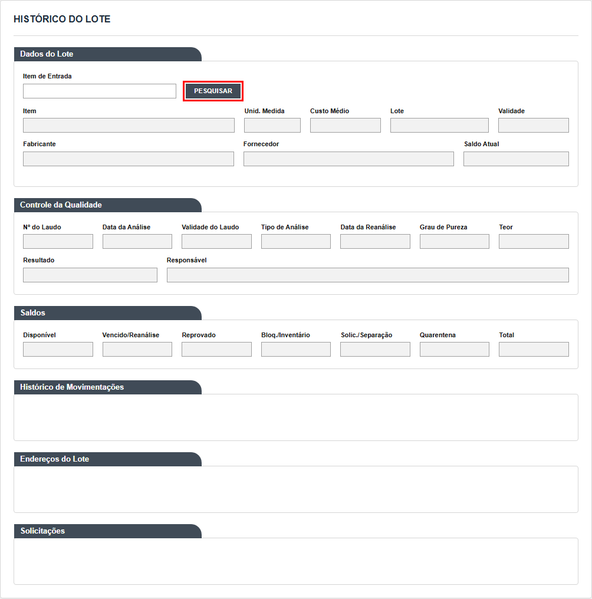
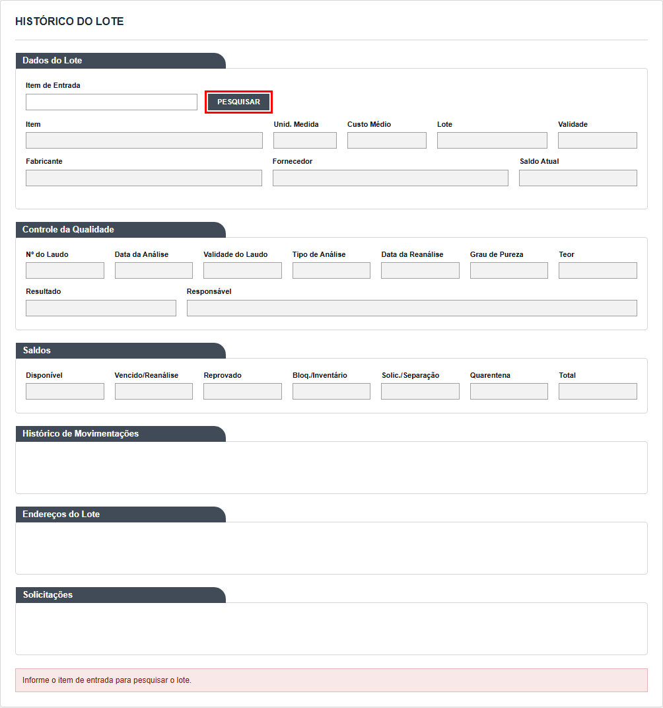
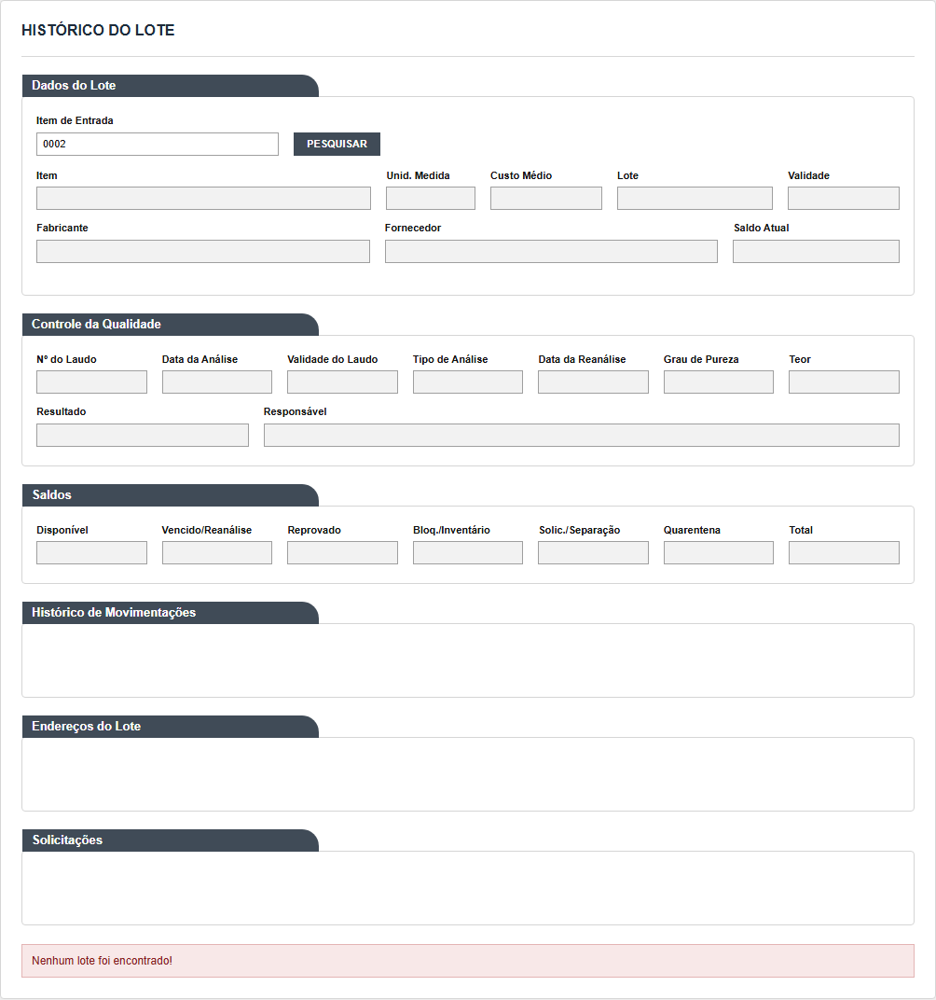
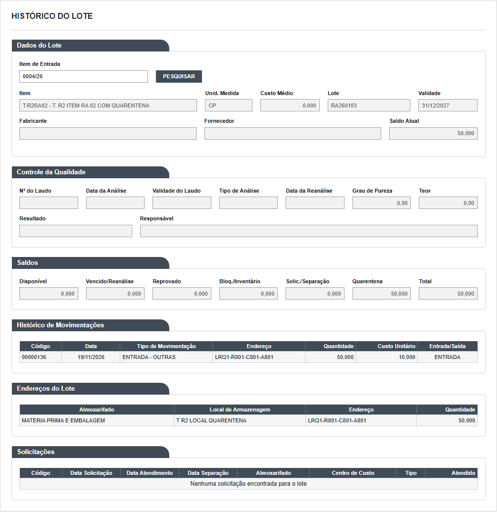
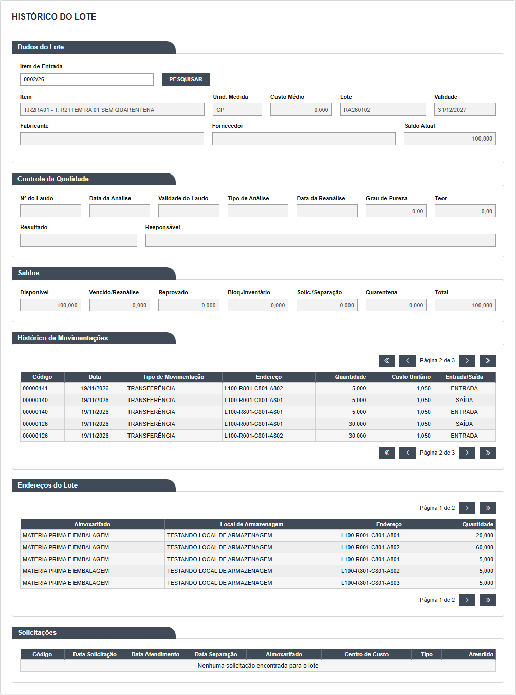
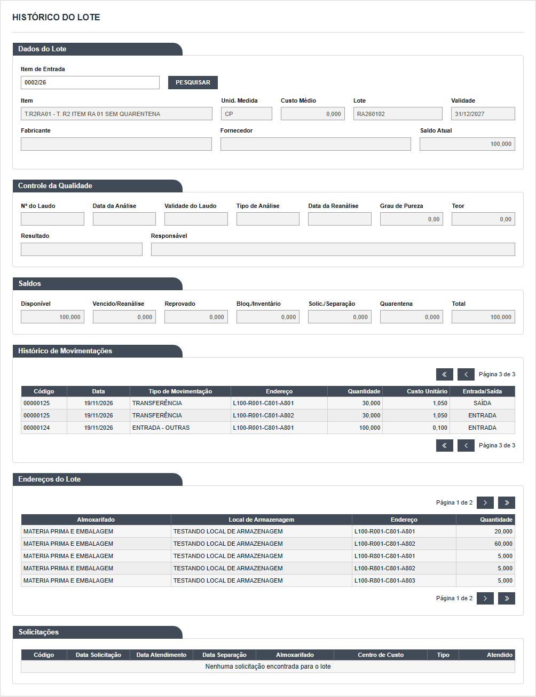
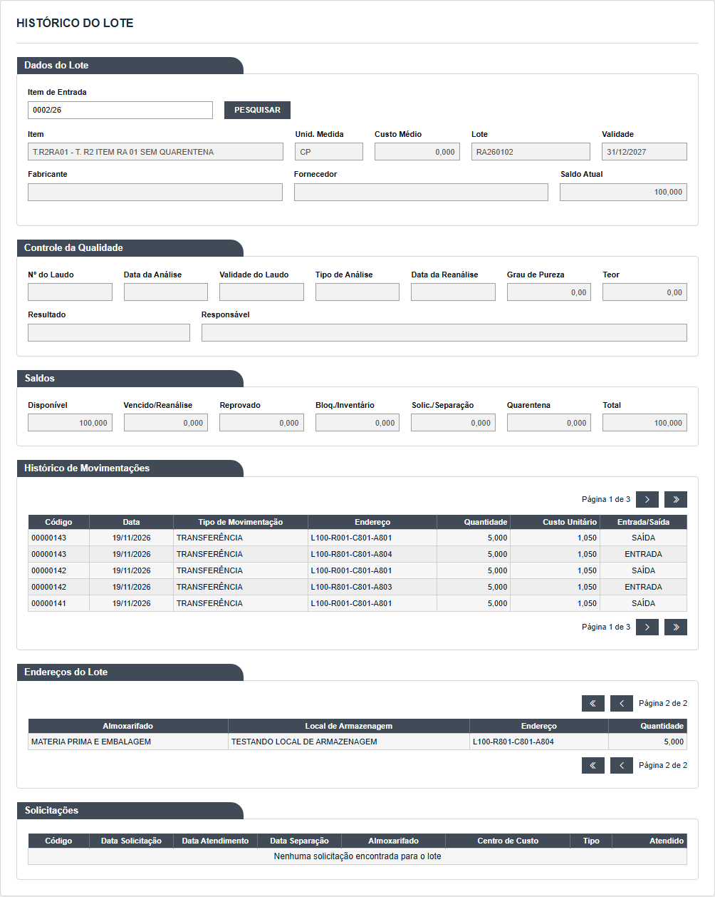
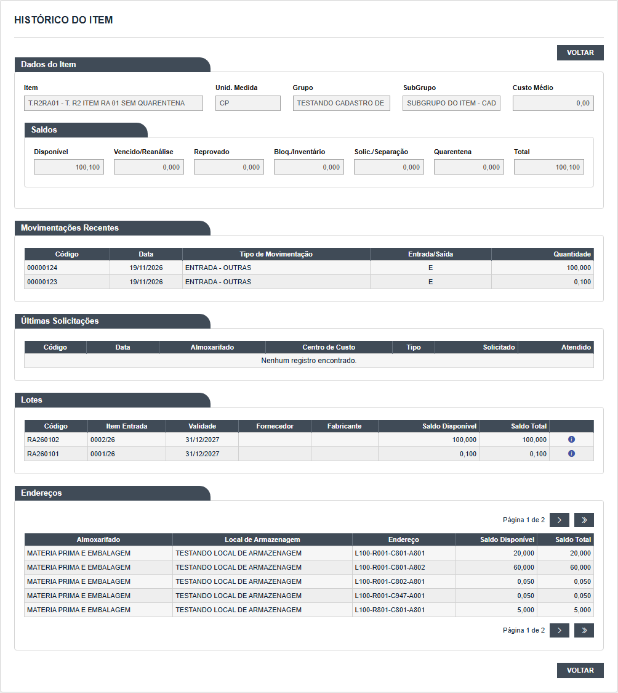
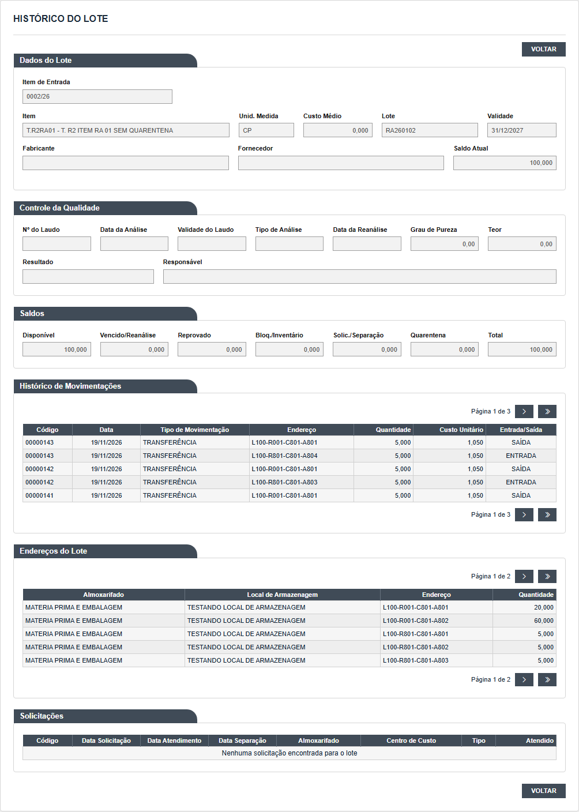

Menu: Estoque > Estoque (o título da tela é "HISTÓRICO DO LOTE") · Situação do manual: Em ajuste (testado parcialmente em 19/11/2026 com 11 prints: consulta, busca exata, paginação das movimentações e dos endereços e abertura pelo Histórico do Item; lote com análise aprovada, lote revalidado, lote sem movimentação, o texto das grades vazias e o perfil sem permissão ficaram sem como testar, com o motivo em "Prints que faltam") · Situação da tela: funciona com falhas (as movimentações não mostram usuário nem hora: DV-EST-N-122, Média, repete o DV-EST-034 do legado; VOLTAR só existe quando aberta pelo Histórico do Item) · Fonte dos prints: versão nova.
Como ler este manual: o que está escrito como visto na tela foi testado em 19/11/2026, com o administrador. O que o teste não alcançou vem marcado "não foi possível" e está em "Prints que faltam". O que ainda é leitura do código diz "pelo código" (front da versão nova, foto de 17/11/2026). O que vem do manual do legado e não foi visto aqui diz "(do legado; a confirmar na versão nova)". Dados de teste: lote RA260102 (Item de Entrada 0002/26, item T.R2RA01, 100,000 em 6 endereços e 13 linhas de movimentação depois das transferências 00000140 a 00000143), lote RA260101 (0001/26), lote RA260103 (0004/26, 50,000 em quarentena) e lotes TA0042/26, TA0043/26 e TA0029/26. A busca é pelo número do sistema (Item de Entrada), não pelo código RA do lote.
Para que serve
A ficha do lote, só de consulta. O usuário digita o Item de Entrada e clica em PESQUISAR; a página mostra Dados do Lote, Controle da Qualidade (última análise), Saldos, o Histórico de Movimentações, os Endereços do Lote e as Solicitações que usaram o lote. Serve à Garantia da Qualidade e ao Controle da Qualidade para investigar um lote (desvio, reclamação, recolhimento) e ao almoxarifado para localizar material. Não grava nada.
Como era no legado (do legado; a confirmar na versão nova):
O Histórico do Lote é a ficha do lote: mostra, na mesma página, os dados do lote, a última análise do Controle da Qualidade, os saldos por condição, as movimentações, os endereços onde o lote está e as solicitações que o consumiram (historico_lote_lst.aspx:45-455). A tela só consulta: não grava nada, e não tem Imprimir nem Excel.
Antes de começar (o que precisa existir)
| O que precisa existir | Para quê | Onde se cadastra |
|---|---|---|
| Usuário administrador (perfil 1) | Só ele abre o Estoque (DV-EST-N-001) | Principal > Administração |
Item de Entrada do lote (por exemplo 0002/26 ou TA0043/26) |
É a chave da busca; precisa ser digitado completo | Aparece na Disponibilidade de Estoque (Histórico do Item), nas telas de entrada e na Solicitação |
| Lote que passou pelo estoque | Sem saldo e sem movimentação as grades vêm vazias; no ambiente todo lote tem ao menos uma movimentação | Entrada de Material - Outras (tela 41) |
| Mais de 5 movimentações e mais de 5 endereços (para ver a paginação) | O lote RA260102 ganhou 13 linhas e 6 endereços com as transferências |
Movimentação de Material (tela 30) |
| Análise do CQ (opcional) | Alimenta o quadro Controle da Qualidade. Nenhum lote do ambiente chegou a ter análise com resultado (DV-EST-N-121) | Módulo Controle da Qualidade |
Passo a passo
- Abrir a tela. No menu Estoque, clique em Histórico do Lote. O título é "HISTÓRICO DO LOTE". O quadro Dados do Lote traz só Item de Entrada (até 40 caracteres) e PESQUISAR; todos os outros quadros (Controle da Qualidade, Saldos e as três grades) aparecem vazios. Pelo menu não há VOLTAR nem LIMPAR.

- Pesquisar. Digite o Item de Entrada completo (por exemplo
0002/26) e clique em PESQUISAR. A página preenche todos os quadros, descritos nos passos 3 a 8. Campo em branco: "Informe o item de entrada para pesquisar o lote."; item inexistente: "Nenhum lote foi encontrado!". Espaços nas pontas e letras minúsculas são aceitos (0002/26eta0043/26acharam o lote).


- Busca exata.
0002e0002/2dão "Nenhum lote foi encontrado!": é preciso digitar o número completo (0002/26).

- Dados do Lote: Item, Unid. Medida, Custo Médio, Lote, Validade, Fabricante, Fornecedor e Saldo Atual. No lote
RA260102: T.R2RA01, CP, validade 31/12/2027, saldo 100,000. O Custo Médio vem 0,000 embora as movimentações do mesmo lote mostrem custo unitário 1,050 (ponto para validar: de onde sai o Custo Médio). - Controle da Qualidade: os nove campos (Nº do Laudo, Data da Análise, Validade do Laudo, Tipo de Análise, Data da Reanálise, Grau de Pureza, Teor, Resultado e Responsável) existem e ficam vazios nos lotes sem análise. No lote em quarentena
0004/26(AGUARDANDO ANÁLISE na Movimentação de Quarentena) o quadro também fica vazio, com Grau de Pureza e Teor em 0,00. Lote com análise aprovada: não foi possível ver (nenhuma análise chega ao resultado, DV-EST-N-121).

- Saldos: Disponível, Vencido/Reanálise, Reprovado, Bloq./Inventário, Solic./Separação, Quarentena e Total. O saldo bate com a soma dos endereços:
0002/26tem 100,000 disponível e total;0004/26tem 50,000 em Quarentena e 0,000 disponível;TA0042eTA0043têm 100,000 em quarentena. - Histórico de Movimentações: colunas Código, Data, Tipo de Movimentação, Endereço, Quantidade, Custo Unitário e Entrada/Saída, a mais recente primeiro, 5 por página. Cada transferência traz duas linhas (SAÍDA e ENTRADA). A data mostra só o dia; não há usuário nem hora (DV-EST-N-122). A paginação (Primeira, Anterior, número, Próxima, Última, no alto e no pé do quadro) funciona: no lote
0002/26, "Página 1 de 3"; Próxima leva à página 2 (com Primeira e Anterior), Última à 3 (3 linhas: 00000125, 00000125 e 00000124) e Primeira volta à 1.


- Endereços do Lote: Almoxarifado, Local de Armazenagem, Endereço e Quantidade, só com saldo. O lote
0002/26tem 6 endereços (A801 com 20,000, A802 com 60,000 e quatro de 5,000), em "Página 1 de 2"; Próxima mostra o sexto endereço (L100-R801-C801-A804, 5,000). Funciona, ao contrário do legado.

- Solicitações: Código, Data Solicitação, Data Atendimento, Data Separação, Almoxarifado, Centro de Custo, Tipo e Atendido (a coluna de atendimento vem escrita certa, sem o erro do legado). Sem solicitação: "Nenhuma solicitação encontrada para o lote". Com solicitação: fica para a tela 33 (Atendimento de Solicitação).
- VOLTAR. Aparece só quando a tela é aberta pelo Histórico do Item (botão Histórico do lote do detalhe do item), no alto e no pé da página, e leva de volta ao Histórico do Item. Nessa abertura o lote já vem pesquisado.


Passo a passo do legado, para comparar (do legado; a confirmar na versão nova): digitar o Item de Entrada completo (busca exata: TA0006/26 acha; TA0006 não); Custo Médio do item, não do lote; só a última análise; movimentações com 5 por página sem quem fez nem a hora; "Endereços do Lote" com só os 5 primeiros visíveis, porque a troca de página não funcionava; LIMPAR depois da pesquisa libera o campo; VOLTAR só quando aberta pelo Histórico do Item.
Ícones e botões da lista
| Botão | O que faz | Quando aparece |
|---|---|---|
| PESQUISAR | Busca o lote pelo Item de Entrada | Sempre |
| VOLTAR | Volta ao Histórico do Item | Só quando a tela é aberta pelo Histórico do Item, no alto e no pé da página |
| Primeira / Anterior / número / Próxima / Última página | Trocam a página das grades de movimentações e de endereços | Quando há mais de 5 linhas (vistos nas duas grades) |
| LIMPAR | Não existe nesta tela | Nem pelo menu nem pelo Histórico do Item |
Segundo o manual do legado (do legado; a confirmar na versão nova): PESQUISAR antes de pesquisar; LIMPAR depois de pesquisar, se a tela não foi aberta pelo Histórico do Item; VOLTAR só quando aberta por ele. A tela não tem lista de linhas com ícones.
Botões e ações
PESQUISAR, VOLTAR (só quando aberta pelo Histórico do Item) e a paginação das grades de movimentações e de endereços (todos vistos). A tela não tem Incluir, Imprimir, Excel nem LIMPAR.
Botões do legado (do legado; a confirmar na versão nova):
| Botão ou ação | Quando aparece | O que faz | Fonte |
|---|---|---|---|
| PESQUISAR | Antes de pesquisar | Busca o lote pelo Item de Entrada e preenche a página | historico_lote_lst.aspx.cs:212-216 e 56-93 |
| LIMPAR | Depois de pesquisar, quando a tela não foi aberta pelo Histórico do Item | Esvazia a página e libera o campo | historico_lote_lst.aspx.cs:74 e 205-210 |
| VOLTAR | Só quando a tela foi aberta pelo Histórico do Item | Volta ao Histórico do Item, com o item e a análise | historico_lote_lst.aspx.cs:41-52 e 160-164 |
| Troca de página (movimentações e solicitações) | Quando há mais de 5 linhas | Mostra as 5 linhas seguintes | historico_lote_lst.aspx.cs:277-281 e 394-398 |
| Troca de página (endereços) | Quando há mais de 5 linhas | Não faz nada (o código da troca está vazio) | historico_lote_lst.aspx.cs:338-341 |
Mensagens do sistema
Vistas na tela: "Nenhum lote foi encontrado!" · "Informe o item de entrada para pesquisar o lote." · "Nenhuma solicitação encontrada para o lote"
Pelo código da tela, não vistas: "Não foi possível carregar o histórico do lote." · "Não foi possível carregar os dados."
Mensagens do legado (do legado; a confirmar na versão nova):
| Mensagem (texto exato do código) | Quando aparece | Fonte |
|---|---|---|
| Nenhum lote foi encontrado! | Item de Entrada que não existe | historico_lote_lst.aspx.cs:68 |
| Nenhuma movimentação encontrada | Lote sem movimentação (vista em teste: CT-EST-197, 08/10/2026; rodadas 9 e 10, 22/10/2026) | historico_lote_lst.aspx.cs:315 |
| Nenhum endereço encontrado | Lote sem saldo em endereço (vista em teste: rodada 6, 13/10/2026, no lote que perdeu o saldo) | historico_lote_lst.aspx.cs:373 |
| Nenhuma solicitação encontrada para o lote | Lote sem solicitação | historico_lote_lst.aspx.cs:434 |
Outras falhas sobem como mensagem do erro e de seu detalhe, em um quadro vermelho com o link "Detalhe do erro (+)" (historico_lote_lst.aspx.cs:81-92 e 144-158).